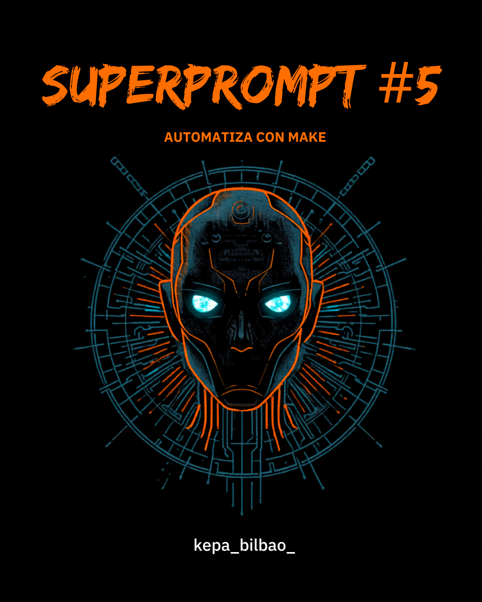
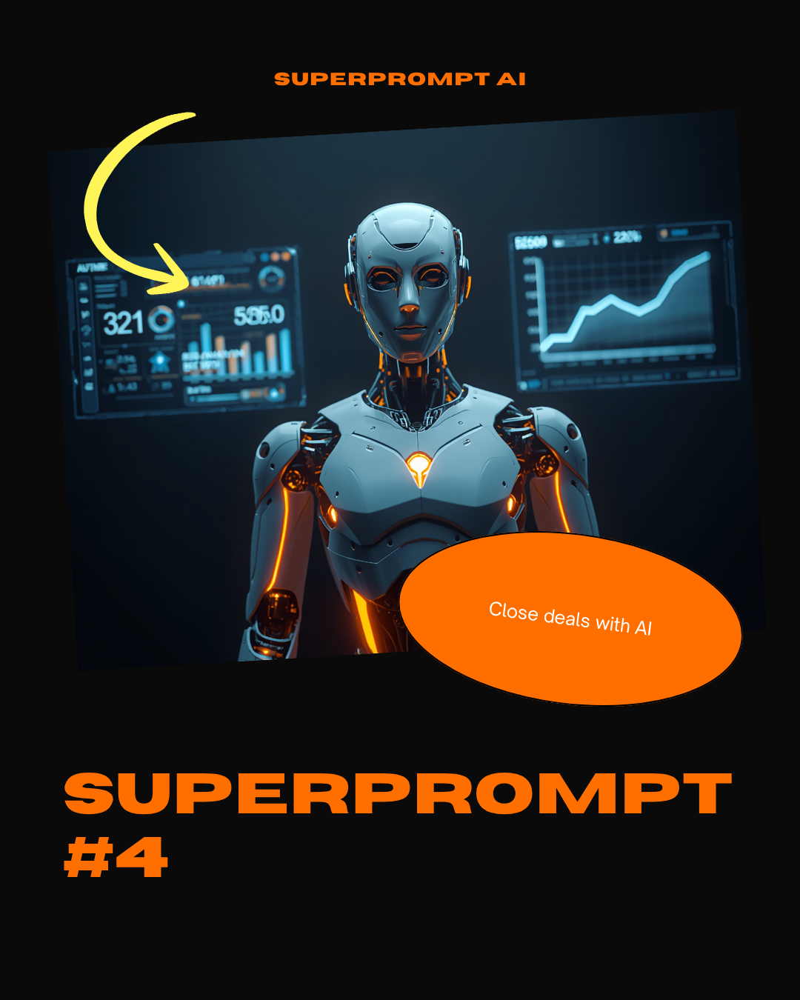
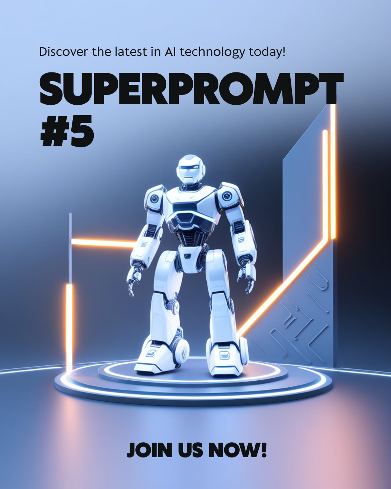
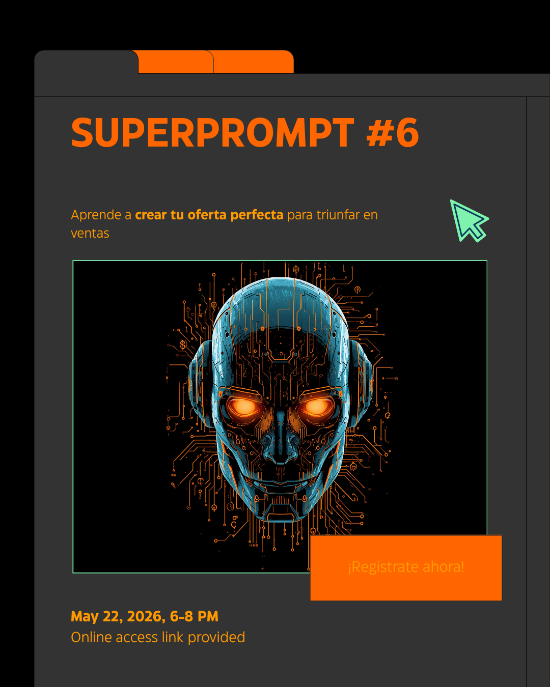

// 01
Automatización de Procesos
Diseño y construyo workflows en n8n (y Make.com) que eliminan tareas manuales repetitivas — desde altas de clientes hasta facturación.
n8nMake.comWebhooks
Freelancer en Bilbao especializado en automatización e IA para PYMEs. Conecto n8n, agentes de IA con Claude y Python para que elimines trabajo manual y escales sin contratar más personal.
De flujos sencillos a sistemas completos con IA en producción. Todo entregado con documentación, control de errores y soporte post-entrega.

Diseño y construyo workflows en n8n (y Make.com) que eliminan tareas manuales repetitivas — desde altas de clientes hasta facturación.
Claude API integrado en tus flujos para clasificar, resumir, decidir y responder. La IA hace el juicio; tú validas lo crítico.

SMS, WhatsApp y email transaccional con Twilio. Avisos, recordatorios y respuestas que llegan en segundos, no en horas.
Datos en tiempo real desde tus herramientas reunidos en un panel claro. Ves el negocio en una pantalla, no en quince pestañas.

Conecto las apps que ya usas — CRM, ERP, e-commerce, hojas de cálculo — sin tirarlo todo abajo. Sin fricción, sin duplicar datos.

Antes de construir, decidimos qué merece la pena. Hojas de ruta, cálculo de ROI y arquitectura de sistemas que no te toca rehacer en seis meses.
No reinvento la rueda — uso lo mejor de cada plataforma y las hago funcionar juntas como un solo sistema.
Uso herramientas de vanguardia en mi propio flujo de desarrollo para entregar agentes y automatizaciones más rápido, con menos errores y listos para escalar.
Integro Claude Code en el desarrollo para auditar, refactorizar y desplegar código con más precisión. Paso de la idea a un agente en producción en una fracción del tiempo tradicional.
Estructuro los datos y sistemas para que sean comprensibles por otros modelos de IA — no solo funcionan, sino que escalan. La IA propone; tú validas siempre lo crítico.
Prototipo, pruebo y corrijo en ciclos cortos. Validamos sobre sistemas reales en días, no en meses de reuniones — con documentación y control de errores siempre incluidos.
Sin sorpresas. Sin meses de reuniones. Un proceso claro con entregas a fecha fija y check-ins continuos.
30 minutos en los que reviso tus procesos, identifico qué se puede automatizar y calculamos juntos cuánto te ahorra al mes. Sin compromiso.
Antes de tocar una línea, dibujamos el sistema completo: flujos, fallbacks y métricas. Validamos sobre papel para que la implementación sea rápida.
Construyo, pruebo y te lo entrego funcionando con documentación clara. Soporte post-entrega incluido — si algo falla por mi parte, lo arreglo sin coste.
Tres formatos según el tamaño del proyecto. Si no encajas en ninguno, hablamos y armamos algo a medida — sin coste de cotización.
Para un proceso concreto: “cuando llega X, haz Y”.
Para automatizar una operativa completa con IA en producción.
Auditoría, hoja de ruta y mantenimiento mensual continuo.
Soy Kepa Bilbao. Llevo años construyendo automatizaciones e integraciones de IA para PYMEs y autónomos — el tipo de empresa donde una sola persona hace cinco trabajos a la vez.
Mi enfoque es práctico: n8n para orquestar, Claude para la inteligencia (API y Claude Code), Python para la lógica a medida. Y todo conectado con tus sistemas actuales.
También creo productos digitales de automatización — dashboards, templates y sistemas de alertas — que vendo de forma recurrente.
Dos ejemplos típicos del tipo de proyecto que entrego. Las cifras concretas y las referencias verificables las repaso en el diagnóstico.
Una persona copiaba a mano facturas recibidas desde 4 canales distintos a una hoja de cálculo cada lunes.
Workflow Make.com con OCR + Claude API para validar campos. Las facturas aterrizan ya estructuradas en Airtable.
~4h/semana ahorradas · 0 errores manuales · revisión semanal en 5 minutos.
Cada cliente nuevo se daba de alta a mano en 5 herramientas distintas — con datos duplicados y errores.
Formulario único → workflow que sincroniza CRM, Slack, Notion, facturación y Drive. IA clasifica el sector.
+3 clientes/mes aceptados sin contratar · alta en 8 min · cero datos duplicados.
Un agente comercial de oro de inversión registraba a mano todos los datos de cada cliente nuevo — lento, repetitivo y con riesgo de error en cada alta.
Workflow en n8n: el formulario de captación dispara un proceso que estructura los datos con una API de Python y los vuelca ya validados en la ficha del cliente.
~1 hora al día recuperada · altas sin teclear · datos consistentes en cada ficha.
Casos representativos. Referencias concretas y números reales bajo NDA — se enseñan en la consulta.
Negocios reales de Bizkaia y remoto que recuperaron horas cada semana. Sustituye estos textos por las palabras de tus propios clientes.
Pasábamos los lunes enteros copiando facturas. Kepa lo montó en una semana y ahora lo revisamos en 5 minutos. Lo único que lamento es no haberlo hecho antes.
Aceptamos 3 clientes más al mes sin contratar a nadie. El onboarding que antes nos comía media mañana ahora se hace solo. Soporte impecable.
No sé de tecnología y me daba miedo. Me lo entregó funcionando y documentado con vídeos. Cuando tuve una duda, respondió el mismo día.
// Testimonios de muestra — reemplázalos por reseñas reales con permiso del cliente.
Cada semana publico un prompt o caso real de automatización con IA — listo para copiar, pegar y aplicar a tu negocio.
Artículos cortos y prácticos sobre automatización e IA. Si te atascas con una herramienta, probablemente aquí encuentres el camino.
Cuando ningún nodo cubre tu lógica, expónla como una API con FastAPI y llámala desde el workflow. Paso a paso, con ejemplo y buenas prácticas.
Patrones para que tus agentes no se queden dando vueltas: límites de iteración, condiciones de salida, deduplicación y control de errores.
Coste, curva de aprendizaje y límites reales de cada uno — para que no pagues de más ni te quedes corto.
Elige un día y una hora. Al confirmar se abre WhatsApp con la cita escrita — yo te respondo confirmando el hueco. 30 minutos, sin compromiso.
En 30 minutos te digo qué se puede automatizar y cuánto te ahorra al mes. Elige cómo prefieres empezar: